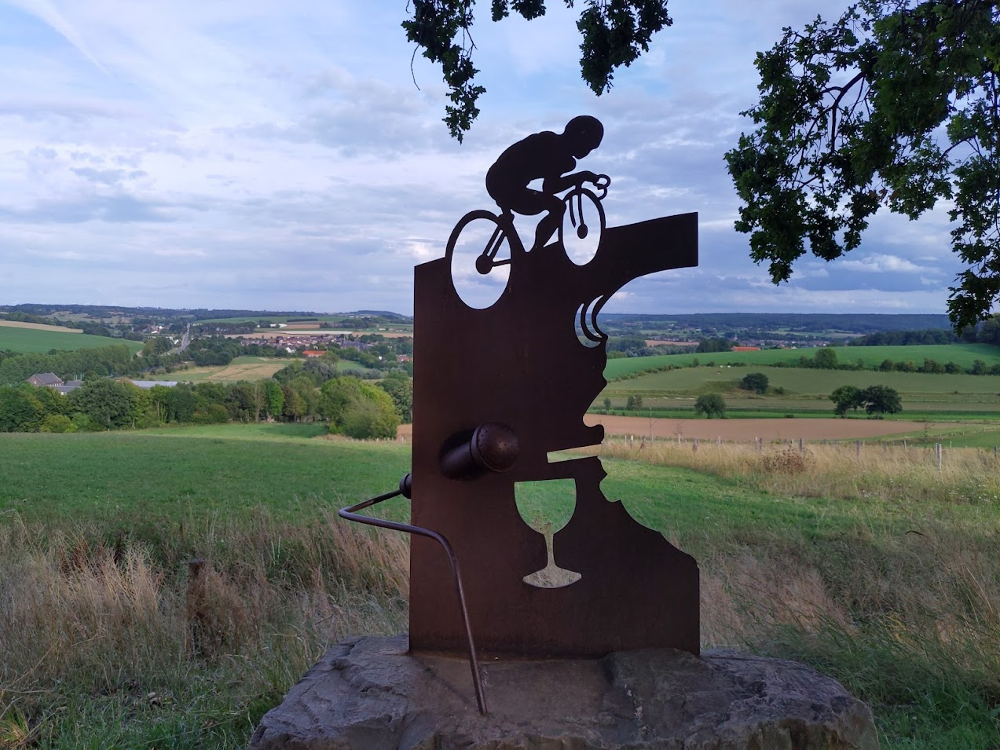
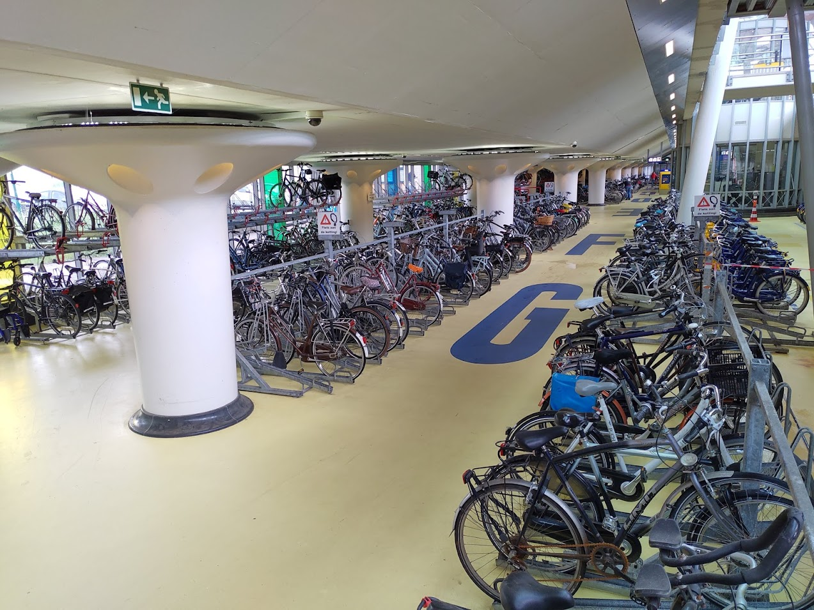
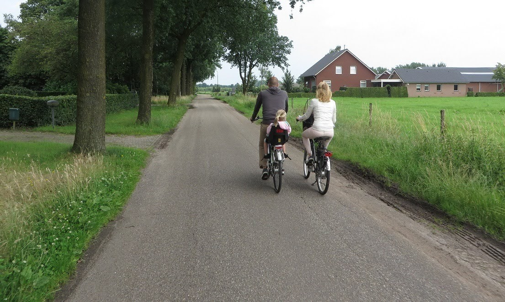

On 13th March 2022 Brihanmumbai Municipal Corporation unveiled its first ever Mumbai Climate Action Plan (MCAP) with an aim to build a climate-resilient city, to achieve net-zero carbon emissions by 2050. As a proud cycle-owner, it sprouted lots of excitement and joy. Will Mumbai be the pioneer in building a safe and climate friendly infrastructure in India? To understand what role does cycling play in a green, climate friendly infrastructure, let's look at the Netherlands, where there are more bikes than people.
The Netherlands is considered a safest place for cycling. The cycling infrastructure is developed in such a way that vehicles, pedestrians and cyclists can all co-exist. How did it get here? Netherlands always had the cycling infrastructure, but it was not safe. Intolerable number of traffic deaths, especially children, led to mass protests, their calls went knocking on the doors of decision makers and planners. Major push for better cycling norms came during the 1973 oil crisis, which had sky-rocketed the energy prices and had halted the country. Government took significant measures to reduce their dependency on oil and gas; but was also largely possible due to people choosing to accept the change! The policies were amended to support cycling, imposing more taxes on cars/car-owners/vehicle infrastructure and creating more tax benefits for cycle owners. Public cycling tours and protests created awareness among the policy makers that eventually changed the thinking about the transport policies.

What were the results? All cars are now banned from all city-centers in the Netherlands. Employers have bike friendly facilities, including and not limited to shower rooms, safe bike parking, basic repair stations, cashable bike-points for each kilometers traveled on bike, tax benefits on purchasing a new bike and numerous others. Bikes can be transported in all the trains in Europe during off-peak hours. In conclusion, the focus shifted considerably towards bringing in grassroot level changes and drafting better cycling friendly laws. Note here that the policies were made lucrative towards people and not for corporate.
As we can see, a lot of transition happened between 1970 and now, for the cycling to be integral part of Netherlands. Today, the Netherlands has more cycles than the people. Mumbai has already picked up the traction for cycling. Many roads are made car-free to facilitate cycling for specified hours in a week. On a bad side, we have already seen a lots of casualties resulting from the vehicular mishaps. I hope that the MCAP planners and decision makers will take a note of these and take adequate steps in addressing safety of cyclists. Thinking should transition from "cycle lane" to independent "cycle path".

Cycling needs to be made an integral part of government policies. Owning a car is not wrong, what's wrong is its misuse and overuse. With MCAP, we can expect the focus to move away from car-centric planning towards people-centric without caring about the corporate profits. Incentives should move to people, not towards the corporate. Our problems are not unique, and neither should be our solutions.
What do you think about the MCAP. Do you think India is ready for building safe cycling infrastructure for cyclists? If you find this article interesting, you may also like our post on 4 lessons learnt on our 4 day Mumbai to Goa cycling trip.